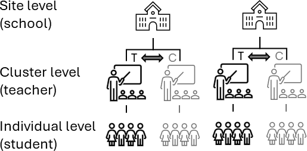
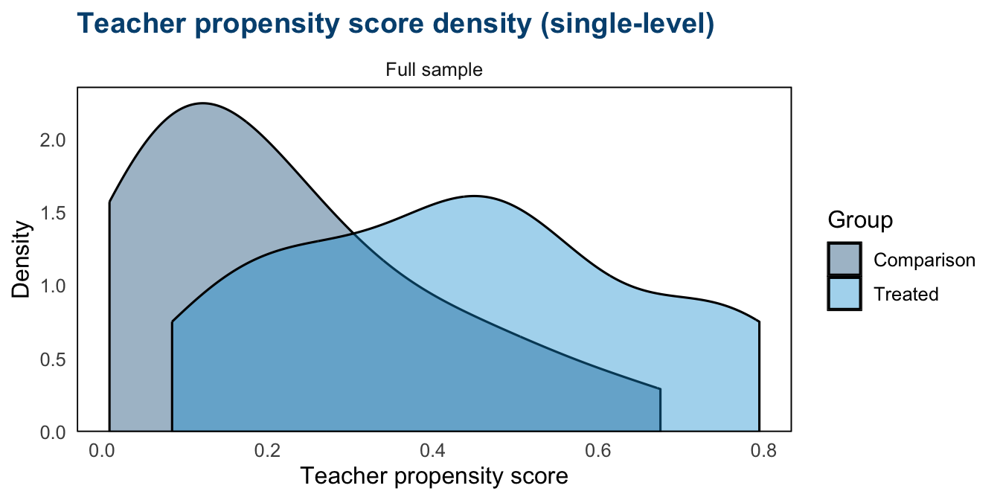
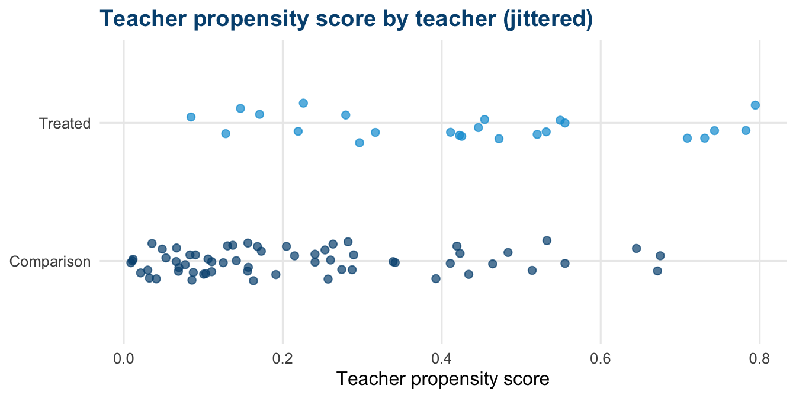
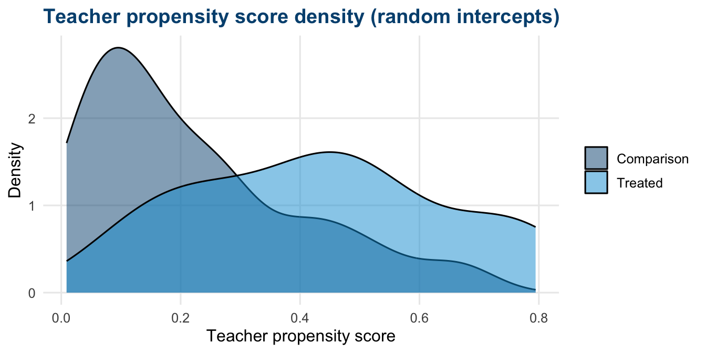
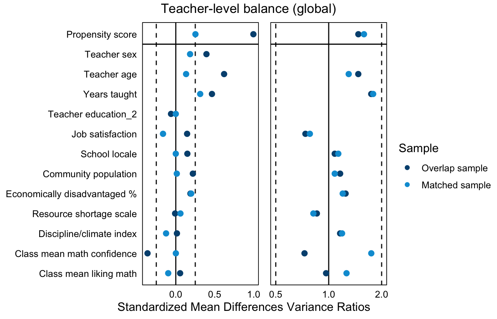
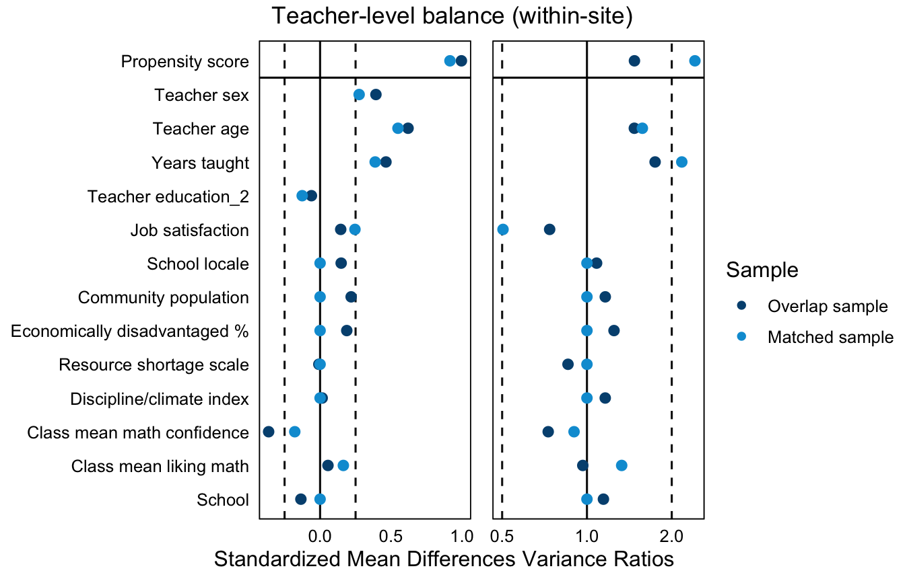
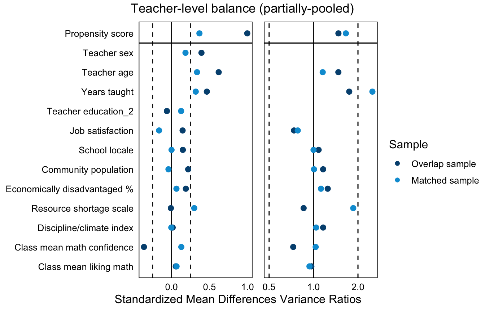
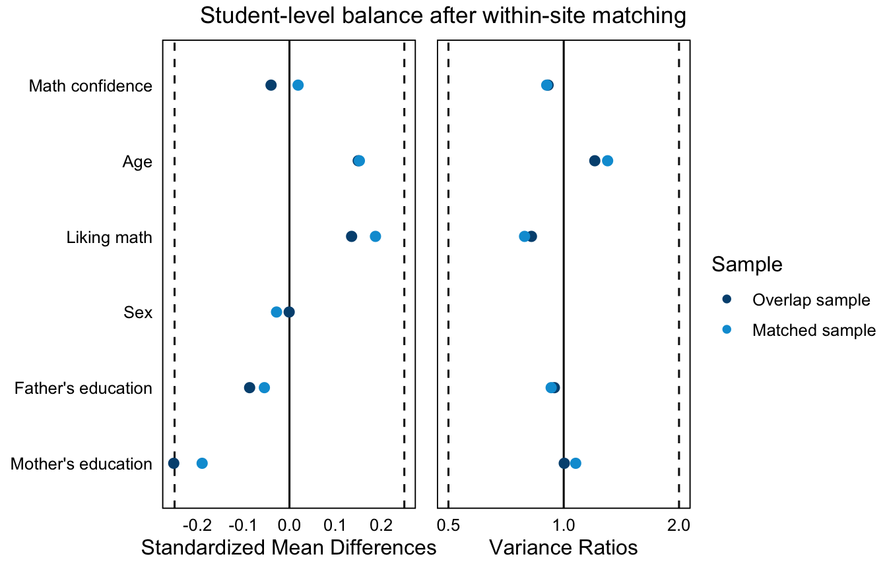

# ── Packages ──────────────────────────────────────────────────────────────────
library(tidyverse)
library(MatchIt)
library(CMatching) # within-site / preferential within-site cluster matching
library(cobalt)
library(lme4)
library(marginaleffects)
library(gt)
# CMatching (via Matching) attaches MASS, whose select() masks dplyr::select(); restore dplyr's.
select <- dplyr::select
# ── AIR brand palette ─────────────────────────────────────────────────────────
air_navy <- "#00507F"
air_blue <- "#009DD7"
air_mid <- "#006E9F"
air_green <- "#08A94F"
air_gray <- "#E2E6E8"
air_dark <- "#1C252D"
# Default ggplot2 theme
theme_set(
theme_minimal(base_size = 12) +
theme(
plot.title = element_text(color = air_navy, face = "bold"),
panel.grid.minor = element_blank()
)
)
set.cobalt.options(binary = "std")
# ── Data ──────────────────────────────────────────────────────────────────────
# Loads the TIMSS analytic data. multisite_cluster_treatment is constructed in
# Chapter 4 (= 1 if the student's teacher majored in math) and is
# teacher-constant:
# every student in a teacher's classroom shares one value, and the value varies
# across teachers within a school. We load it directly and do not recompute it.
timss <- readRDS("data/timss_df.rds")Multisite cluster assignment design, MCAD (Chapter 7)
TipHow to use this document
This page contains the code from the handbook chapter with the explanatory text removed. Run the chunks in order from the top, because later chunks depend on objects created earlier. The numbered notes under a chunk explain the marked lines. The full discussion of each stage is in the handbook chapter.
NoteMain takeaways
- A multisite cluster assignment design (MCAD) is one in which treatment is assigned to whole clusters (teachers) that are themselves nested within sites (schools), and every individual (student) in a cluster shares the cluster’s condition.
- The MCAD combines elements of the multisite individual assignment design (MIAD) and the cluster assignment design (CAD).
- MCAD can target four estimands: the individual-average effect, the cluster-average effect, the individual-based site-average effect, and the cluster-based site-average effect.
- Matching, balance, and confounding involve all three levels (individual, cluster, site).
knitr::include_graphics("figures/mcad_design.png")
Stage 1: Define estimand and understand data
Examining the data context
teacher_df <- timss |>
1 summarise(across(c(school_id, multisite_cluster_treatment,
teacher_sex, teacher_age, teacher_years_taught,
teacher_edu, teacher_job_satisfaction,
school_locale, school_pop, school_econ_pct,
school_shortage, school_discipline),
first),
.by = teacher_id) |>
arrange(teacher_id)
site_diagnostics <- teacher_df |>
summarise(
2 n_teachers = n(),
n_treated = sum(multisite_cluster_treatment == 1),
n_control = sum(multisite_cluster_treatment == 0),
prop_treated = mean(multisite_cluster_treatment == 1),
.by = school_id
)
3overall_rate <- mean(teacher_df$multisite_cluster_treatment)
prop_schools_with_both <- mean(site_diagnostics$n_treated > 0 &
site_diagnostics$n_control > 0)
c(overall_rate = overall_rate,
prop_schools_with_both = prop_schools_with_both)- 1
-
summarise(across(..., first))collapses to exactly one row per teacher, taking each teacher’s value of the (teacher-constant) treatment indicator and the teacher- and school-level covariates. - 2
-
For each school we count its teachers and how many are treated versus comparison. The
prop_treatedcolumn feeds Diagnostic 2. - 3
-
overall_rateis the treated share of teachers across the full sample, andprop_schools_with_bothis the share of schools that contain both a treated and a comparison teacher, the schools in which within-site cluster matching is possible (Diagnostic 1). This share informs the matching choices in Stage 3.
overall_rate prop_schools_with_both
0.1304348 0.4565217 icc_3level <- function(var) {
fit <- lmer(reformulate("(1 | school_id) + (1 | school_id:teacher_id)",
response = var), data = timss)
vc <- as.data.frame(VarCorr(fit))
total <- sum(vc$vcov)
c(school = vc$vcov[vc$grp == "school_id"] / total,
teacher = vc$vcov[vc$grp == "school_id:teacher_id"] / total)
}
icc_math <- icc_3level("math_score")- 1
- We count schools by their number of treated teachers, one row per count.
- 2
- The row at zero shows the schools with no treated teacher, which cannot contribute a within-site cluster pair (Diagnostic 1). Most schools with a treated teacher hold exactly one, so within-site pools are thin.
| Treated teachers in school | Number of schools |
|---|---|
| 0 | 25 |
| 1 | 18 |
| 2 | 3 |
1overlap_schools <- site_diagnostics |>
filter(n_treated > 0 & n_control > 0) |>
pull(school_id)
2teacher_df_overlap <- teacher_df |>
filter(school_id %in% overlap_schools)
3df_overlap <- timss |>
filter(school_id %in% overlap_schools)
c(schools_all = n_distinct(timss$school_id),
schools_with_overlap = length(overlap_schools))- 1
-
overlap_schoolsis the set of schools with at least one treated and one comparison teacher, the only schools in which a within-site cluster pair can be formed. - 2
-
teacher_df_overlapis the teacher-level frame restricted to overlap schools, the frame the propensity score and cluster matching operate on. - 3
-
df_overlapis the corresponding student-level frame, used later to merge teacher match weights back to students for individual-level balance and the outcome model.
schools_all schools_with_overlap
46 21 Stage 2: Define distance measure
Covariates and aggregation to the cluster level
comp <- timss |>
1 summarise(mean_math_conf = mean(student_math_conf),
mean_like_math = mean(student_like_math),
.by = teacher_id)
teacher_df_overlap <- teacher_df_overlap |>
2 left_join(comp, by = "teacher_id")
3ps_formula <- multisite_cluster_treatment ~
teacher_sex + teacher_age + teacher_years_taught +
teacher_edu + teacher_job_satisfaction +
school_locale + school_pop + school_econ_pct +
school_shortage + school_discipline +
mean_math_conf + mean_like_math- 1
- We aggregate two student covariates to the teacher level (classroom means), the aggregation step described above. Adding SDs or quantiles (not shown) would retain within-class distributional information at the cost of more parameters.
- 2
- The aggregates are merged onto the teacher frame, so every covariate on the propensity score right-hand side is now teacher-constant.
- 3
-
ps_formulamixes teacher covariates, school covariates, and the classroom aggregates. The left-hand side is the teacher-level treatment indicator. We reuse this formula across the propensity score fits below.
Estimating the cluster-level propensity score
# Single-level logistic on teacher and school covariates
1m_ps_single <- matchit(ps_formula, data = teacher_df_overlap,
method = NULL, distance = "logit")
# School fixed effects replace the observed school covariates
# (fit shown to illustrate the specification; not stored as a distance)
2ps_fe <- glm(update(ps_formula, . ~ . - school_locale -
school_pop - school_econ_pct -
school_shortage - school_discipline +
factor(school_id)),
data = teacher_df_overlap, family = binomial())
# School random intercepts
3ps_ri <- glmer(update(ps_formula, . ~ . + (1 | school_id)),
data = teacher_df_overlap, family = binomial())
teacher_df_overlap <- teacher_df_overlap |>
4 mutate(pscore_single = m_ps_single$distance,
pscore_ri = predict(ps_ri, type = "response"))
summary(teacher_df_overlap$pscore_single)
summary(teacher_df_overlap$pscore_ri)- 1
-
Single-level logistic regression, fit with
matchit(..., method = NULL, distance = "logit")as in Chapters 5 and 6, addresses school confounding only through the observed school covariates. - 2
-
School fixed effects (
factor(school_id)replacing the observed school covariates) absorb observed and unobserved school confounding of teacher selection (Chapter 3). With only three or four teachers per school, however, this model can be fragile, and a fully interacted variant is rarely feasible. - 3
-
School random intercepts model the school effects as draws from a common normal distribution and remain feasible when schools have too few teachers for fixed effects. Here the fitted between-school variance is essentially zero (a singular fit, whose warnings we suppress), so
pscore_rinearly duplicatespscore_single. - 4
-
We store the single-level and random-intercept propensity score vectors on the teacher frame. (The fixed-effects propensity score is not stored as a matching distance because, with the school absorbed, the appropriate follow-up is exact within-site matching, below.) Each
pscore_*vector is ready to pass as adistancetomatchit().
Min. 1st Qu. Median Mean 3rd Qu. Max.
0.008957 0.103869 0.233277 0.279070 0.424619 0.794547
Min. 1st Qu. Median Mean 3rd Qu. Max.
0.008957 0.103869 0.233277 0.279070 0.424619 0.794547 Checking common support
1ov <- teacher_df_overlap |>
mutate(group = if_else(multisite_cluster_treatment == 1,
"Treated", "Comparison"))
2bal.plot(m_ps_single,
var.name = "distance",
which = "unadjusted",
sample.names = "Full sample",
colors = c(air_navy, air_blue)) +
scale_fill_manual(values = c(air_navy, air_blue),
labels = c("Comparison", "Treated")) +
labs(x = "Teacher propensity score", fill = "Group") +
ggtitle("Teacher propensity score density (single-level)")
3ggplot(ov, aes(x = pscore_single, y = group, color = group)) +
geom_jitter(height = 0.15, width = 0, size = 2, alpha = 0.7) +
scale_color_manual(values = c(air_navy, air_blue)) +
labs(x = "Teacher propensity score", y = NULL) +
theme(legend.position = "none") +
ggtitle("Teacher propensity score by teacher (jittered)")- 1
- We label each teacher by treatment status on the overlap teacher frame.
- 2
-
The density panel plots the smoothed teacher propensity score by treatment status, drawn with
cobalt::bal.plot()from the Stage 2matchitobject, as in Chapters 5 and 6. Adequate overlap shows the two densities covering the same range. - 3
- The dot plot places one point per teacher on the propensity score axis, jittered vertically only. It shows each teacher individually rather than smoothing them into a density that is unstable at small counts.


ggplot(ov, aes(x = pscore_ri, fill = group)) +
geom_density(alpha = 0.5) +
scale_fill_manual(values = c(air_navy, air_blue)) +
labs(x = "Teacher propensity score", y = "Density", fill = NULL) +
ggtitle("Teacher propensity score density (random intercepts)")
Stage 3: Implement matching method
Global (between-site) cluster matching
- 1
-
matchit()runs on the teacher frame. The formula declares which covariates appear in the later balance diagnostics, andmethod = "nearest"requests 1:1 nearest-neighbor matching. With noexactconstraint, each treated teacher is matched to its nearest comparison teacher anywhere in the overlap sample. - 2
-
distance =passes the stored single-level teacher propensity score from Stage 2. Swap inpscore_rito match on the random-intercept propensity score instead. - 3
-
replace = FALSEuses each comparison teacher at most once, andestimand = "ATT"targets the average effect on the treated teachers, the matching-side counterpart of the worked-example estimand. The three remaining matching approaches keep these settings.
A `matchit` object
- method: 1:1 nearest neighbor matching without replacement
- distance: User-defined - number of obs.: 86 (original), 48 (matched)
- target estimand: ATT
- covariates: teacher_sex, teacher_age, teacher_years_taught, teacher_edu, teacher_job_satisfaction, school_locale, school_pop, school_econ_pct, school_shortage, school_discipline, mean_math_conf, mean_like_mathWithin-site cluster matching
m_within_it <- matchit(ps_formula, data = teacher_df_overlap,
method = "nearest",
distance = teacher_df_overlap$pscore_single,
1 exact = ~school_id,
replace = FALSE, estimand = "ATT")
m_within_it- 1
-
exact = ~school_idrestricts every match to the same school, which is the within-site cluster match.method,distance,replace, andestimandhave the same meanings as in the global block above. We carrym_within_itforward to the Stage 4 balance plots, which readmatchitobjects directly.
A `matchit` object
- method: 1:1 nearest neighbor matching without replacement
- distance: User-defined - number of obs.: 86 (original), 48 (matched)
- target estimand: ATT
- covariates: teacher_sex, teacher_age, teacher_years_taught, teacher_edu, teacher_job_satisfaction, school_locale, school_pop, school_econ_pct, school_shortage, school_discipline, mean_math_conf, mean_like_math, school_idPartially-pooled (within-group) cluster matching
- 1
-
The call is the within-site
matchitfrom above with the exact constraint relaxed from the school identifier to a school-group variable. - 2
-
exact = ~school_localerequires matches to share a locale category (rural through urban) rather than the exact school, so a treated teacher can match a comparison teacher in a different school of the same locale. In an MCAD this is often the practical default, because within-site pools are small.
A `matchit` object
- method: 1:1 nearest neighbor matching without replacement
- distance: User-defined - number of obs.: 86 (original), 48 (matched)
- target estimand: ATT
- covariates: teacher_sex, teacher_age, teacher_years_taught, teacher_edu, teacher_job_satisfaction, school_locale, school_pop, school_econ_pct, school_shortage, school_discipline, mean_math_conf, mean_like_mathPreferential within-site cluster matching
set.seed(20250601)
1td_sorted <- teacher_df_overlap |> arrange(school_id)
m_pref <- MatchPW(
2 Y = rep(0, nrow(td_sorted)),
Tr = td_sorted$multisite_cluster_treatment,
X = td_sorted$pscore_single,
Group = td_sorted$school_id,
estimand = "ATT", M = 1, replace = FALSE
)
3pref_within <- td_sorted$school_id[m_pref$index.treated] ==
td_sorted$school_id[m_pref$index.control]
n_pref_within <- n_distinct(m_pref$index.treated[pref_within])
n_pref_fallback <- n_distinct(m_pref$index.treated[!pref_within])
4tibble(matched_within_site = n_pref_within,
matched_via_fallback = n_pref_fallback,
dropped = m_pref$ndrops.matches)- 1
-
MatchPW()(fromCMatching[@arpino_propensity_2016], the package Chapter 5 used for site-restricted matching) requires its input vectors sorted in ascending order ofGroup, so we sort the teacher frame byschool_id. - 2
-
Yis not used to choose matches, so we pass a placeholder.MatchPW()matches within school first, then searches across schools for any unmatched treated teacher.M = 1andreplace = FALSErequest 1:1 matching without reuse in the within-site step; the fallback step itself matches with replacement, and here its 20 pairs draw on 12 distinct comparison teachers. - 3
-
We classify each matched pair by whether its two teachers share a school. Every treated teacher has a within-school comparison available, yet under
CMatching’s default 0.25-SD caliper only 4 of the 24 matched within their own school, 20 fell back between sites, and 0 were dropped. Report this split whenever the fallback is used. - 4
- The tibble reports the within-site pairs, the fallback pairs, and the dropped treated teachers.
# A tibble: 1 × 3
matched_within_site matched_via_fallback dropped
<int> <int> <int>
1 4 20 0Stage 4: Assess quality of the matched sample
Sample retention at three levels
n_treated_teachers <- sum(teacher_df_overlap$multisite_cluster_treatment == 1)
1matched_teachers <- bind_rows(
"Global" = match.data(m_across),
"Within-site" = match.data(m_within_it),
"Partially-pooled" = match.data(m_grouped),
.id = "approach") |>
filter(multisite_cluster_treatment == 1)
2treated_students <- df_overlap |>
filter(multisite_cluster_treatment == 1)
3retention <- matched_teachers |>
summarise(
teachers = n(),
schools = n_distinct(school_id),
students = sum(treated_students$teacher_id %in% teacher_id),
.by = approach
) |>
mutate(pct_treated = 100 * teachers / n_treated_teachers)
retention |>
gt() |>
cols_label(approach = "Matching approach", teachers = "Treated teachers",
schools = "Schools", students = "Treated students",
pct_treated = "% teachers retained") |>
fmt_number(columns = pct_treated, decimals = 1)- 1
-
bind_rows(..., .id = "approach")stacks the three MatchIt-based matched samples into one frame labeled by approach, mirroring the retention pattern in Chapter 6, and we keep the treated teachers. - 2
- This filters to the treated students in the overlap sample. Each approach’s student count is the number of these students whose teacher is in that approach’s matched sample.
- 3
-
One
summarise()per approach counts the three retention levels before we add the percentage of the 24 treated teachers retained. An approach that keeps few treated clusters describes a different population than one that keeps most of them.
| Matching approach | Treated teachers | Schools | Treated students | % teachers retained |
|---|---|---|---|---|
| Global | 24 | 21 | 303 | 100.0 |
| Within-site | 24 | 21 | 303 | 100.0 |
| Partially-pooled | 24 | 21 | 303 | 100.0 |
Cluster covariate balance (SMD & variance ratio)
var_labels <- c(
distance = "Propensity score",
school_id = "School",
teacher_sex = "Teacher sex",
teacher_age = "Teacher age",
teacher_years_taught = "Years taught",
teacher_edu = "Teacher education",
teacher_job_satisfaction = "Job satisfaction",
school_locale = "School locale",
school_pop = "Community population",
school_econ_pct = "Economically disadvantaged %",
school_shortage = "Resource shortage scale",
school_discipline = "Discipline/climate index",
mean_math_conf = "Class mean math confidence",
mean_like_math = "Class mean liking math",
student_math_conf = "Math confidence",
student_age = "Age",
student_like_math = "Liking math",
student_sex = "Sex",
dad_edu = "Father's education",
mom_edu = "Mother's education")- 1
-
love.plot()takes amatchitobject directly and shows balance on the teacher and school covariates for the full sample and the matched sample.binary = "std"is set globally in setup. - 2
-
stats = c("mean.diffs", "variance.ratios")produces SMDs on the left and variance ratios on the right. The variance-ratio panel is the addition relative to a means-only check. - 3
-
thresholds = c(m = .25, v = 2)draws reference lines at SMD 0.25 and variance ratio 2 (and its reciprocal 0.5). We use the 0.25 default rather than a stricter line and reserve 0.10 for named confounders where a study justifies it.sample.nameslabels the unadjusted (overlap) and matched samples in the legend.

1love.plot(m_within_it,
stats = c("mean.diffs", "variance.ratios"),
thresholds = c(m = .25, v = 2),
sample.names = c("Overlap sample", "Matched sample"),
var.names = var_labels,
colors = c(air_navy, air_blue),
title = "Teacher-level balance (within-site)")- 1
-
Two display rows in this plot need a reader’s note. The
Schoolrow is the exact-matching variable, balanced by construction rather than through the propensity score. Thedistancerow’s large post-match SMD reflects the within-site trade-off, in that restricting matches to the same school leaves the propensity scores themselves less closely paired.

love.plot(m_grouped,
stats = c("mean.diffs", "variance.ratios"),
thresholds = c(m = .25, v = 2),
sample.names = c("Overlap sample", "Matched sample"),
var.names = var_labels,
colors = c(air_navy, air_blue),
title = "Teacher-level balance (partially-pooled)")
Comparing balance across approaches
1smd_summary <- function(b) {
bal <- b$Balance
2 bal <- bal[!(bal$Type == "Distance" |
rownames(bal) == "school_id"), , drop = FALSE]
d <- coalesce(bal$Diff.Adj, bal$Diff.Un)
v <- coalesce(bal$V.Ratio.Adj, bal$V.Ratio.Un)
c(max = max(abs(d), na.rm = TRUE), mean = mean(abs(d), na.rm = TRUE),
vr_min = suppressWarnings(min(v, na.rm = TRUE)),
vr_max = suppressWarnings(max(v, na.rm = TRUE)))
}
3smd_tbl <- list(
"Global" = bal.tab(m_across, stats = c("mean.diffs", "variance.ratios")),
"Within-site" = bal.tab(m_within_it, stats = c("mean.diffs", "variance.ratios")),
"Partially-pooled" = bal.tab(m_grouped, stats = c("mean.diffs", "variance.ratios"))
) |>
map(smd_summary) |>
bind_rows(.id = "approach")
smd_tbl |>
gt() |>
cols_label(approach = "Matching approach", max = "Max |SMD|", mean = "Mean |SMD|",
vr_min = "Min VR", vr_max = "Max VR") |>
fmt_number(columns = c(max, mean), decimals = 3) |>
fmt_number(columns = c(vr_min, vr_max), decimals = 2)- 1
-
As in Chapter 6,
smd_summary()condenses acobaltbalance table to the worst and average absolute SMD and the variance-ratio range.coalesce()picks the adjusted value when available and the raw value otherwise (cobaltleaves the other column entirelyNA). - 2
-
We drop the propensity-score “distance” row and the raw
school_ididentifier row (present because the within-site match is exact on the school) so the summary reflects covariates only. - 3
-
A named list of the three balance tables mapped through the helper and stacked with
bind_rows(.id =), one row per matching approach.
| Matching approach | Max |SMD| | Mean |SMD| | Min VR | Max VR |
|---|---|---|---|---|
| Global | 0.313 | 0.107 | 0.78 | 1.79 |
| Within-site | 0.549 | 0.160 | 0.50 | 2.17 |
| Partially-pooled | 0.335 | 0.144 | 0.78 | 2.51 |
Within-site cluster balance
- 1
-
bal.tab(..., cluster = "school_id")computes teacher-level balance separately within each school on the within-site matched sample, testing whether matched teachers resemble each other inside their shared school. With a string cluster variable,bal.tabneeds an explicitdataargument, so we passdata = teacher_df_overlap. - 2
-
which.cluster = .nonesuppresses the per-school printout and returns the across-cluster summary. Pass specific school ids to inspect individual schools.stats = c("mean.diffs")reports SMDs only; per-school variance ratios are not estimable at these cell sizes.
Balance summary across all clusters
Type Min.Diff.Adj Mean.Diff.Adj Max.Diff.Adj
distance Distance -0.5752 1.0043 3.4740
teacher_sex Binary -2.5000 0.3300 2.5000
teacher_age Contin. -2.2361 0.4769 2.6517
teacher_years_taught Contin. -2.3506 0.4627 5.1265
teacher_edu_2 Binary -2.3094 -0.0655 2.1213
teacher_job_satisfaction Contin. -2.2361 0.0890 2.2361
school_locale Contin. 0.0000 0.0000 0.0000
school_pop Contin. 0.0000 0.0000 0.0000
school_econ_pct Contin. 0.0000 0.0000 0.0000
school_shortage Contin. 0.0000 0.0000 0.0000
school_discipline Contin. 0.0000 0.0000 0.0000
mean_math_conf Contin. -4.8615 -0.4110 1.6850
mean_like_math Contin. -24.0370 -0.6648 2.0815
school_id Contin. 0.0000 0.0000 0.0000
Total sample sizes across clusters
0 1
All 62 24
Matched 24 24
Unmatched 38 0Individual covariate balance (SMD & variance ratio)
1student_matched <- match.data(m_within_it) |>
select(teacher_id, weights, subclass) |>
2 inner_join(df_overlap, by = "teacher_id")
stud_bal_df <- df_overlap |>
left_join(match.data(m_within_it) |> select(teacher_id, weights),
by = "teacher_id") |>
3 mutate(weights = replace_na(weights, 0))
stud_bal <- bal.tab(
multisite_cluster_treatment ~ student_math_conf +
student_age + student_like_math + student_sex +
dad_edu + mom_edu,
data = stud_bal_df, weights = stud_bal_df$weights,
4 un = TRUE,
s.d.denom = "treated",
stats = c("mean.diffs", "variance.ratios"))
5love.plot(stud_bal,
stats = c("mean.diffs", "variance.ratios"),
thresholds = c(m = .25, v = 2),
sample.names = c("Overlap sample", "Matched sample"),
var.names = var_labels,
colors = c(air_navy, air_blue),
title = "Student-level balance after within-site matching")- 1
-
match.data()returns the matched teachers with their matchweightsandsubclass. We keep just the teacher id and these columns. With 1:1 matching without replacement every weight equals 1, so the weight arguments below are inert; we carry them anyway so the code transfers to designs (replacement, 1:M ratio matching) where the weights are non-uniform. - 2
-
inner_jointodf_overlapexpands each matched teacher to the students in that teacher’s classroom, carrying the teacher’s match weight onto every student row. This frame feeds the outcome models in Stage 5. - 3
- For the balance check we instead keep every overlap student, assigning weight 0 to students whose teacher went unmatched, so the unadjusted comparison reflects the full overlap pool while the weights define the matched sample. The formula lists student covariates only (the teacher covariates were the Stage 4 teacher-level target).
- 4
-
un = TRUEstores the unadjusted statistics alongside the weighted ones, so the love plot displays balance before and after matching.s.d.denom = "treated"standardizes each difference by the treated-group standard deviation, the convention when the estimand targets the treated group. - 5
- In this sample no student covariate exceeds 0.25 after matching, so classroom composition raises no additional concern. When this check does flag covariates, they represent within-classroom compositional differences that aggregation to the teacher level misses.

Site covariate balance (SMD & variance ratio)
1bal.tab(m_across, stats = c("mean.diffs", "variance.ratios"))- 1
-
We compute school-level balance on the global matched teacher frame, where school covariates were not held constant by construction. The school covariates appear in the table because they are part of the
matchitformula, and their rows show the global approach’s residual school imbalance, the cost of trading site control for a larger pool.
Balance Measures
Type Diff.Adj V.Ratio.Adj
distance Distance 0.2521 1.5872
teacher_sex Binary 0.1833 .
teacher_age Contin. 0.1323 1.2995
teacher_years_taught Contin. 0.3131 1.7898
teacher_edu_2 Binary 0.0000 .
teacher_job_satisfaction Contin. -0.1637 0.7814
school_locale Contin. 0.0000 1.1341
school_pop Contin. 0.0130 1.0822
school_econ_pct Contin. 0.1975 1.2014
school_shortage Contin. 0.0598 0.8179
school_discipline Contin. -0.1245 1.1912
mean_math_conf Contin. 0.0010 1.7465
mean_like_math Contin. -0.0970 1.2630
Sample sizes
Control Treated
All 62 24
Matched 24 24
Unmatched 38 0Stage 5: Analyze outcomes
Estimating the individual-average effect
Three-level model
three_level_outcome <- lmer(
1 math_score ~ multisite_cluster_treatment +
student_math_conf + student_age + student_like_math +
student_sex + dad_edu + mom_edu +
teacher_sex + teacher_age + teacher_years_taught +
teacher_edu + teacher_job_satisfaction +
school_econ_pct + school_discipline +
2 (1 | school_id) + (1 | school_id:teacher_id),
data = student_matched, weights = weights,
control = lmerControl(optimizer = "bobyqa"))
3att_three_level <- avg_comparisons(three_level_outcome,
variables = "multisite_cluster_treatment")
att_three_level |> select(estimate, std.error, conf.low, conf.high)- 1
- The fixed part includes the teacher-level treatment plus pretreatment covariates at all three levels, which makes the estimator doubly-robust.
- 2
-
(1 | school_id) + (1 | school_id:teacher_id)are the school and teacher random intercepts. There is no random treatment slope, because treatment does not vary within a teacher. - 3
- G-computation on the three-level fit returns the treatment effect under this specification. With no treatment interaction it equals the model’s fixed-effect coefficient, a precision-weighted average across the multilevel variance structure.
Estimate Std. Error 2.5 % 97.5 %
2.61 6.08 -9.3 14.5Two-level model with school fixed effects
fe_outcome <- lm(
1 math_score ~ multisite_cluster_treatment +
student_math_conf + student_age + student_like_math +
student_sex + dad_edu + mom_edu +
teacher_sex + teacher_age + teacher_years_taught +
2 teacher_edu + teacher_job_satisfaction + factor(school_id),
data = student_matched, weights = weights)- 1
- The fixed part includes the same student- and teacher-level covariates as the three-level model, with school variation absorbed by the fixed effects, keeping the two estimates comparable.
- 2
-
factor(school_id)absorbs all between-school variation with fixed intercepts, which mirrors the within-site matched design.
- 1
-
variables = "multisite_cluster_treatment"is the contrast:avg_comparisons()switches each student’s teacher from comparison to treated and averages the predicted difference, which is g-computation (Chapter 3).newdata = filter(..., multisite_cluster_treatment == 1)restricts the average to the treated students, andwts = "weights"applies the match weights. In this additive model neither changes the number; with interactions they are what separate the effect on the treated from a whole-sample average. - 2
-
vcov = ~school_idclusters the standard errors on the school, the highest level, because dependence propagates through students, teachers, and schools. The two-way clustering recommended in Chapter 5 reduces to school-only clustering when pairs are nested in schools, as they are here.
Estimate Std. Error 2.5 % 97.5 %
0.0824 5.99 -11.7 11.8Estimating the cluster-average effect
teacher_outcomes <- student_matched |>
summarise(
1 multisite_cluster_treatment = first(multisite_cluster_treatment),
mean_math = mean(math_score),
mean_math_conf = mean(student_math_conf),
mean_dad_edu = mean(dad_edu),
teacher_sex = first(teacher_sex),
teacher_age = first(teacher_age),
teacher_years_taught = first(teacher_years_taught),
teacher_edu = first(teacher_edu),
teacher_job_satisfaction = first(teacher_job_satisfaction),
school_id = first(school_id),
wt = first(weights),
.by = teacher_id)
2fit_teacher_agg <- lm(
mean_math ~ multisite_cluster_treatment + teacher_sex +
teacher_age + teacher_years_taught + teacher_edu +
teacher_job_satisfaction + mean_math_conf + mean_dad_edu +
factor(school_id),
data = teacher_outcomes, weights = wt)
3att_teacher_agg <- avg_comparisons(fit_teacher_agg,
variables = "multisite_cluster_treatment")
att_teacher_agg |> select(estimate, std.error, conf.low, conf.high)- 1
- This aggregates the matched students to one row per teacher: the teacher-mean outcome, the teacher-constant treatment and school, teacher covariates, and two classroom-mean student aggregates for the doubly-robust adjustment.
- 2
- An ordinary regression on the teacher-level frame with school fixed effects, weighted by each teacher’s match weight. The fixed effects make this a within-site MIAD analysis of teachers, matching the within-site design and absorbing the (now collinear) school covariates.
- 3
- With one row per teacher, every teacher counts equally, so g-computation targets the cluster-average effect; in this additive model the unrestricted average equals the effect on the treated clusters. The standard error treats teachers as independent given the school fixed intercepts, and with 48 rows against 29 coefficients the fit is thin, so read the estimate as illustrative.
Estimate Std. Error 2.5 % 97.5 %
2.71 8.68 -14.3 19.7Examining between-site heterogeneity
1het_model <- lmer(
math_score ~ multisite_cluster_treatment +
student_math_conf + student_age + student_like_math +
student_sex + dad_edu + mom_edu +
(1 | school_id) +
2 (1 | school_id:teacher_id) +
3 (0 + multisite_cluster_treatment | school_id),
data = student_matched, weights = weights,
control = lmerControl(optimizer = "bobyqa"))
4VarCorr(het_model)- 1
-
het_modelincludes a school random intercept, a teacher random intercept, and a school-level random treatment slope over the teacher-level treatment, with the school-specific effects treated as draws from a common normal distribution. - 2
-
(1 | school_id:teacher_id)is the teacher random intercept, matching the Stage 5 three-level model. Without it, ordinary between-teacher outcome variation would load onto the school-level treatment slope, because the treatment is teacher-constant. - 3
-
(0 + multisite_cluster_treatment | school_id)is the school-level random treatment slope, how much the (teacher-level) treatment effect varies across schools. It includes no1 +, so the intercept is supplied separately by(1 | school_id). - 4
-
VarCorr()reports the estimated standard deviations of the random effects. The treatment-slope standard deviation is the between-school variation in the treatment effect.
Groups Name Std.Dev.
school_id.teacher_id (Intercept) 4.6971
school_id multisite_cluster_treatment 0.0000
school_id.1 (Intercept) 23.2839
Residual 56.5354 vc <- as.data.frame(VarCorr(het_model))
tau_het <- vc$sdcor[which(vc$var1 == "multisite_cluster_treatment" & is.na(vc$var2))]
sd_teacher_het <- vc$sdcor[grepl("teacher_id", vc$grp) & vc$var1 == "(Intercept)"]
n_single_treated <- student_matched |>
distinct(school_id, teacher_id, multisite_cluster_treatment) |>
filter(multisite_cluster_treatment == 1) |>
count(school_id) |>
filter(n == 1) |>
nrow()
n_matched_schools <- n_distinct(student_matched$school_id)